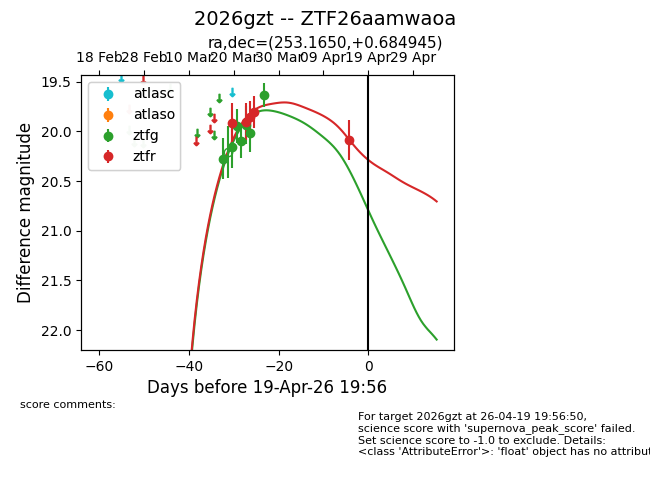
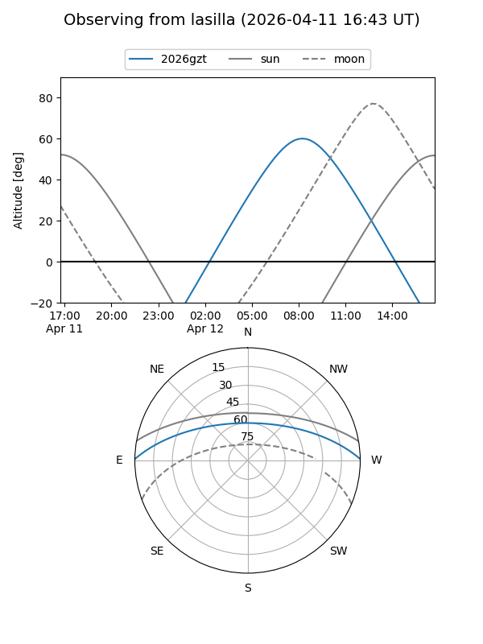
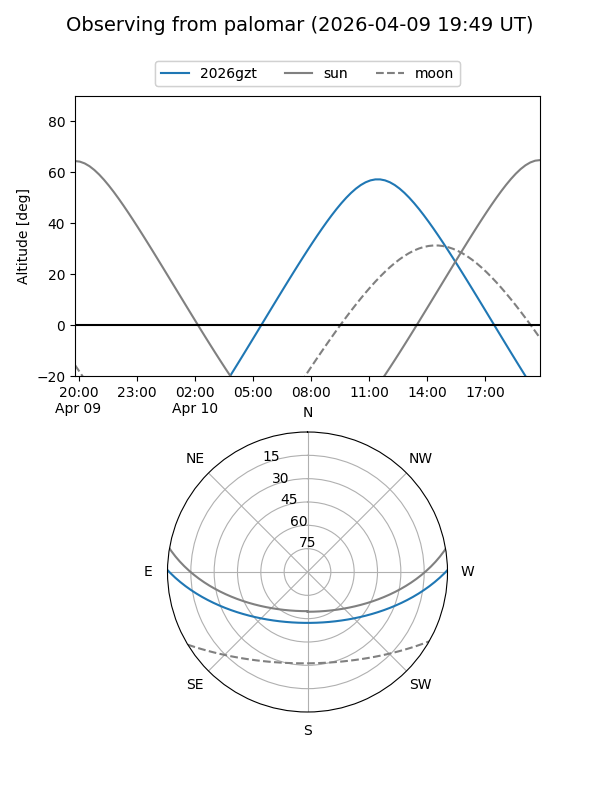
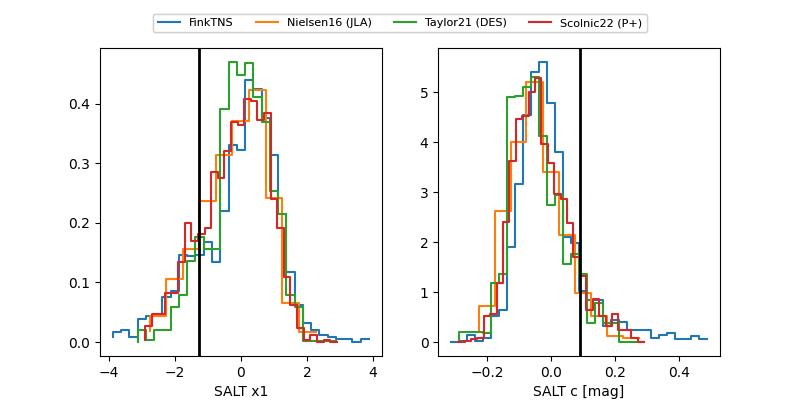

2026gzt
Target 2026gzt at 2026-04-19 20:07
Aliases and brokers:
FINK: link
Lasair: link
ALeRCE: link
TNS: link
YSE: link
alt names
ZTF26aamwaoa (ztf,fink_ztf)
2026gzt (tns,yse)
Coordinates:
equatorial (ra, dec) = 253.1650,+0.68495
equatorial (HMS+DMS) = 16:52:39.61,+00:41:05.80
galactic (l, b) = (19.0154,+26.50633)
Flags:
Photometry:
last ztfg=19.63, ztfr=20.09
7 ztfg, 5 ztfr detections
Lightcurve

Visibility


Additional plots
